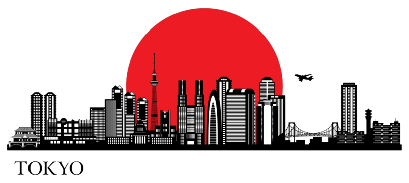

Informações sobre Tóquio
Esta página contém informações importantes sobre a cidade de Tóquio, incluindo demografia, geografia e outras curiosidades.
| Demografia |
População |
14.000.000 hab |
| Densidade populacional |
6.000 hab/km² |
| Geografia |
Área |
2.194 km² |
| Região |
Kanto |
| Website Oficial |
WIKI-TÓQUIO
|
Curiosidades sobre Tóquio
- Tóquio é a cidade mais populosa do Japão e uma das maiores do mundo.
- A cidade possui um dos sistemas de transporte mais eficientes do planeta.
- Tóquio é um dos centros económicos mais importantes do mundo.
- O famoso cruzamento de Shibuya é um dos mais movimentados do mundo.
- Apesar de ser uma metrópole moderna, Tóquio preserva templos antigos como o Senso-ji.